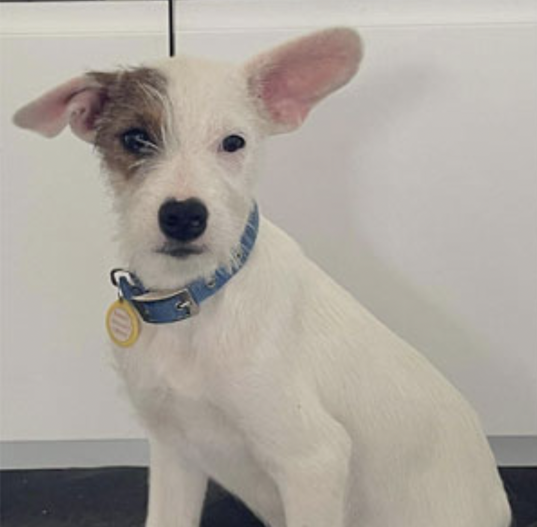
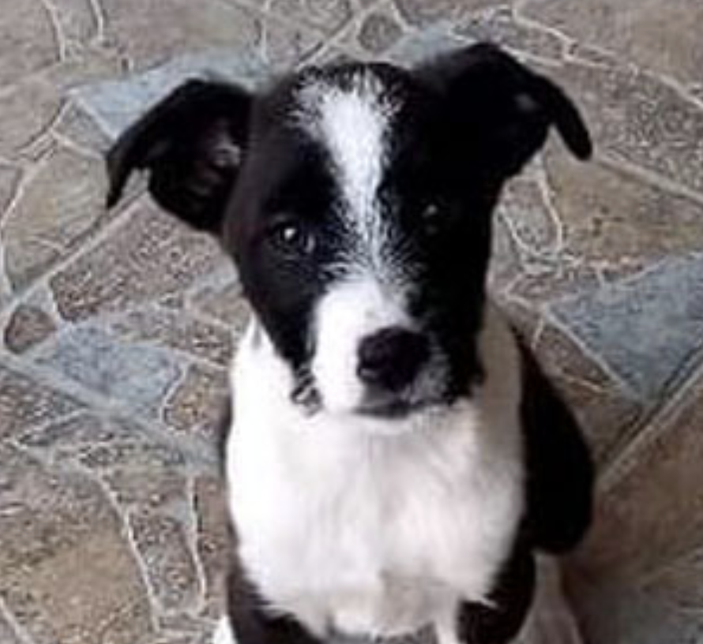
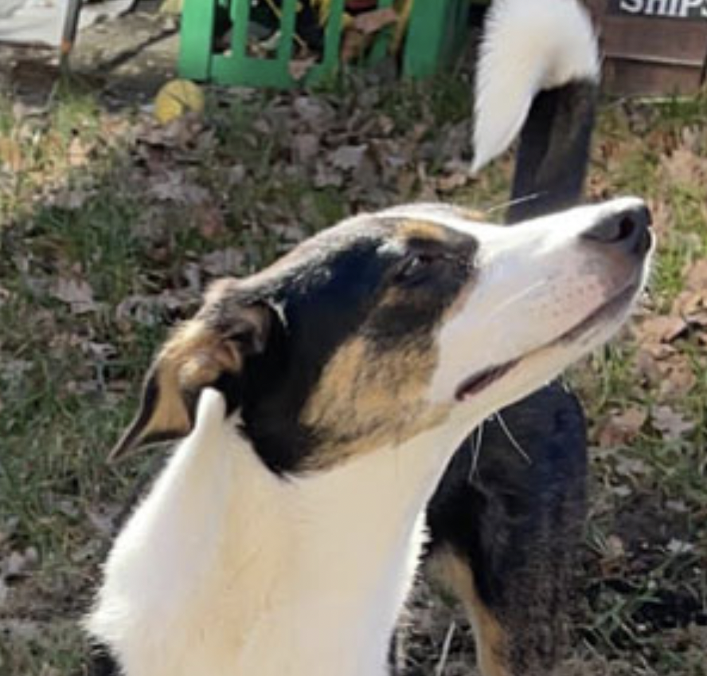
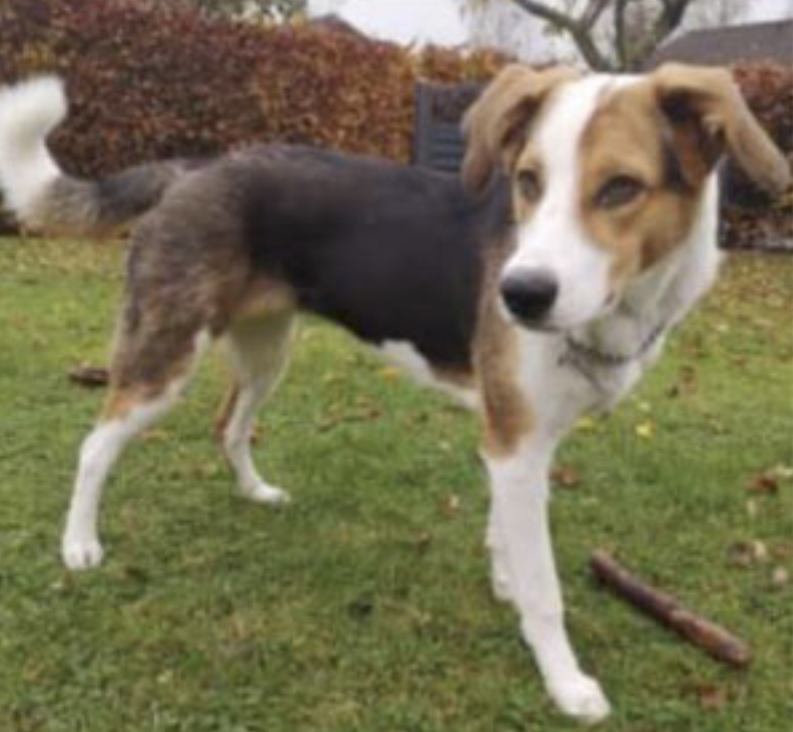
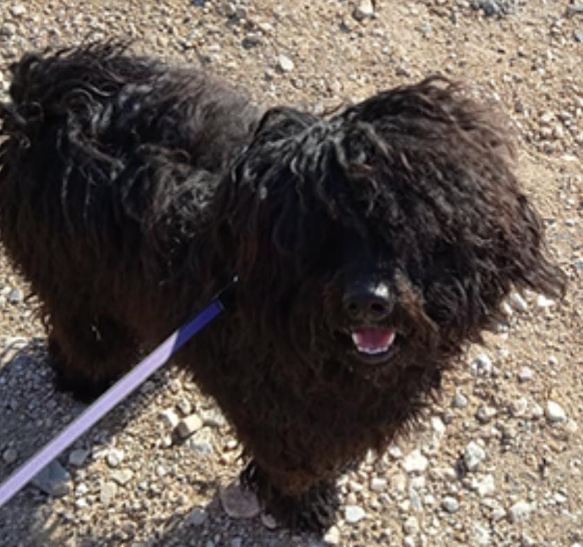

Adoption and foster care
Practical information
See all the dogs below practical information
Adoption families ust be approved
Before you can adopt one of our dogs, you must be approved by our visiting team, who will assess whether the family has the resources to give a dog with a different background, a good and safe life. Based on their observations, as well as an answered questionnaire, the visiting team passes on their recommendation of the family as suitable/unsuitable to the facilitators.
To be approved for adoption, you must be at least 25 years old. Our experience with the placement of dogs has meant that we have made a rule not to adopt dogs out to families with children with under 10 years.
Adopting a dog from Greece
If you want to adopt a dog that is in Greece, we will arrange the home transport and you will pick up the ‘adopted child’ at the airport, where we will of course also be present.
Get xour dog from a foster family in Denmark
If you fall for a dog that has already come to Denmark, we arrange a visit to the foster family, where you can meet the dog and feel the chemistry.
What does it cost and what does the price cover?
The adoption price covers the expenses we have for repatriation of the dog such as veterinary examination, vaccinations, chip marking, EU passports and papers, worm and flea cures and transport to Denmark.
Reservation
It costs a deposit of Kr. 1,500 to reserve a dog. This deposit will not be refunded if the reservation is canceled.
Adpotion price
Kr. 4,500, - Reservation deposit will be deducted from this price.
Dog's health
All dogs that come to Denmark through Greek Dogs are health tested, vaccinated, equipped with EU passports and comply with all EU rules. In addition to meeting the legal requirements, we test for several diseases, including the dreaded Leishmania.
The incubation period for Leishmania can in some cases be several years, and we are aware that there are dogs in Denmark that carry the disease. Leishmania requires lifelong treatment, just like e.g. diabetes and epilepsy in dogs. Infection cannot be transmitted to other dogs or humans, as the carrier is a sandfly (Phlebotomus) that does not live in Denmark.
Unfortunately, we can probably expect to hear more about Leishmania in the future, as Danish dogs who have been on holiday trips to the South are also exposed to the infection.
Ticks, fleas and worms. All these diseases can be treated relatively simply, and the treatment is usually completed before the dog comes to Denmark. The dogs we are in contact with are treated regularly with flea repellents and dewormers, and all dogs that come to Denmark are of course treated.
Dogs available for adoption
Puppies
NOTE: Since all the puppies are mixed breed dogs, where we rarely know the parents, the expected size is always just a guess on the part of the vet. They may be larger or smaller than assumed. If you want to be sure of how big the dog will be, you must adopt an adult dog instead of a puppy.
Kathy - she
Age: Approx. 4 months, weighs approx. 6 kilos (mid May 2022)
Background: Kathy and Kurt were found just 4 weeks old, and have been bottled up by their foster family.
About: Really dear little dog, who loves their caring parents, but also knows how to make trouble.
Kurt - he (RESERVED)
Age: Approx. 3 months, weighs approx. 3 kilos (end of April 2022)
Background: Kathy and Kurt were found just 4 weeks old, and have been bottled up by their foster family.
About: Really dear little dog, who loves their caring parents, but also knows how to make trouble.
Young dogs
Magda - she
Age: 15 months, weighs 22-24 kilos (early May 2022)
Background: Magda is up for relocation, as changes in the family relationship mean that her need for activation and space cannot be met, which she deserves.
About: Magda is a wonderful dog, loving, loves to cuddle and be cuddled. She takes care of her owners and just has to look at people when she does not know them and points out when the postman rings the doorbell. Magda loves to be active, runs really fast and loves to play with dogs of all sizes and breeds.
Lola - she
Age: 1 year, weighs approx. 25 kilos (end of March 2022)
Background: Beautiful Lola came to DK with her 7 siblings in June 2021, where she was adopted by a lovely family, who unfortunately for personal reasons have to let her relocate.
Description: Lola is a lovely, loving, active and smart dog. She did the dog training and knows basic commands. We are looking for a family without small children, a family which is active and likes to go for long walks and would continue some training with Lola, preferably with another dog as Lola is very happy with other dogs. She also loves being outside all the time, so a garden is a necessity.
Marley - he
Age: approx. 10 months, weighs approx. 13 kilos (end of March 2022)
Background: Marley comes from a family that had bought him, without getting acquainted with the breed - Marley is a Hungarian Puli.
Description: As he is a Hungarian Puli he is an independent intelligent dog which is not for everyone. He is cooperative, but he needs mental stimulation. He is good with all the other dogs at the boarding school, and also people. We clearly prefer that he get a family with experience or interest in the breed.